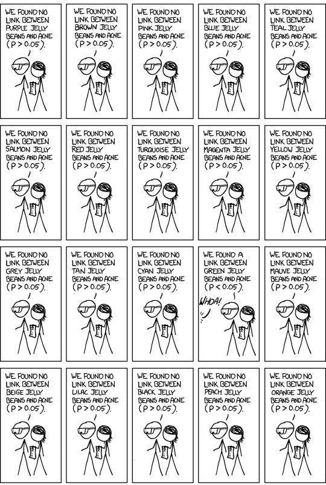
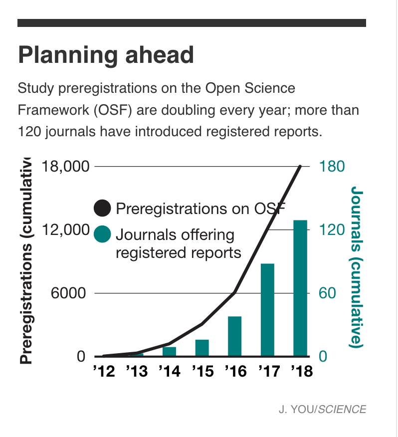

<!DOCTYPE html>
<html lang="en">
  <head>
    <meta charset="utf-8" />
    <meta name="viewport" content="width=device-width, initial-scale=1.0, maximum-scale=1.0, user-scalable=no" />

    <title>Significance Testing</title>
    <link rel="stylesheet" href="./css/reveal.css" />
    <link rel="stylesheet" href="./assets/base.css" id="theme" />
    <link rel="stylesheet" href="./css/highlight/zenburn.css" />
    <link rel="stylesheet" href="./css/print/paper.css" type="text/css" media="print" />
    <link rel="stylesheet" href="./assets/footer.css" />

  </head>
  <body>
    <div class="reveal">
      <div class="slides"><section  data-markdown><script type="text/template">

# Why stastical significance testing doesn't work
### What statistical significance means, why it's broken, and how to fix it

Zach Lipp

Senior Software Engineer, Lumere

17 January 2020
</script></section><section  data-markdown><script type="text/template">
## What is statistical significance? 
</script></section><section  data-markdown><script type="text/template">
###  Significance 101 
- We want to know whether our data signifies a real difference or one that could just be random
<!-- .element: class="fragment" data-fragment-index="1" -->
- We use a very specific test (or "tool") to determine significance
<!-- .element: class="fragment" data-fragment-index="2" -->
- Significance is often a precursor to publishing research or taking an empirical study seriously
<!-- .element: class="fragment" data-fragment-index="3" -->
</script></section><section  data-markdown><script type="text/template">
### Example: Income Distribution
- Let's say we compare average income between groups and find differences
<!-- .element: class="fragment" data-fragment-index="1" -->
- One we expect: Software engineers vs. librarians 
<!-- .element: class="fragment" data-fragment-index="2" -->
- One that surprises us: People born on even-numbered dates vs. people born on odd-numbered dates
<!-- .element: class="fragment" data-fragment-index="3" -->
</script></section><section  data-markdown><script type="text/template">
### Significance 201 
- The standard measure of significance is whether the "p-value" of a statistical test is below the threshold of ($p <= 0.05$)
<!-- .element: class="fragment" data-fragment-index="1" -->
- If the observed values came from the same distribution, we would see results this or more extreme only 5% of the time
<!-- .element: class="fragment" data-fragment-index="2" -->
</script></section><section  data-markdown><script type="text/template">
### Significance 201: Visualizing with Python

```python
from datetime import datetime

import matplotlib.pyplot as plt
import numpy as np
import seaborn as sns

if __name__ == "__main__":
    np.random.seed(1337)
    mean = 0
    std = 1

    dist = np.random.normal(mean, std, size=500)
    # Vectorized rounding
    rounded = np.round_(dist, 1)

    # Plot distribution point-by-point
    fig, ax = plt.subplots()
    counts = dict()
    for i, x in enumerate(rounded):
        y = counts.get(x, 0) + 1
        plt.scatter(x, y, s=100, alpha=0.5, color="b")
        plt.xlim(-2.5, 2.5)
        plt.ylim(-1, 25)
        ax.set_yticklabels([])
        ax.set_xticklabels([])
        counts.update({x: y})
        filename = "anim/" + datetime.now().strftime("%d%H%M%S%f") + ".png"
        plt.savefig(filename)
```
</script></section><section  data-markdown><script type="text/template">
### Significance 201: Sampling the same distribution


</script></section><section  data-markdown><script type="text/template">
### Significance 201: Differences between samples


</script></section><section  data-markdown><script type="text/template">
### Significance 201: Differences between samples


</script></section><section  data-markdown><script type="text/template">
### Significance 201


</script></section><section  data-markdown><script type="text/template">
### Significance 201

$p <= 0.05$ is an arbitrary threshold


</script></section><section  data-markdown><script type="text/template">
### Significance 201

$p <= 0.05$ is an arbitrary threshold


</script></section><section  data-markdown><script type="text/template">
## There's a problem
</script></section><section  data-markdown><script type="text/template">

</script></section><section  data-markdown><script type="text/template">

<!-- .element: class="fragment fade-out" data-fragment-index="0" -->


<!-- .element: class="fragment fade-in" data-fragment-index="0" style="top:0px; position:absolute;" -->
</script></section><section  data-markdown><script type="text/template">
> Don't conclude anything about scientific or practical importance based on statistical significance


<!-- .element: class="fragment fade-in" data-fragment-index="0"--></script></section><section  data-markdown><script type="text/template">
## Why not use statistical significance?
</script></section><section  data-markdown><script type="text/template">
### Problem 1: Interpretability
</script></section><section  data-markdown><script type="text/template">
### Problem 1: Interpretability


> Haller and Kraus, *Misinterpretations of Significance: A Problem Students Share with Their Teachers?*, **Methods of Psychological Research Online**, 2002.
<!-- .element style="font-size:.5em" -->
</script></section><section  data-markdown><script type="text/template">
### Problem 1: Interpretability

> 1. You have absolutely disproved the null hypothesis (that is, there is no difference between the population means)
2. You have found the probability of the null hypothesis being true
3. You have absolutely proved your experimental hypothesis (that there is a difference between the population means
4. You can deduce the probability of the experimental hypothesis being true
5. You know, if you decide to reject the null hypothesis, the probability that you are making the wrong decision
6. You have a reliable experimental finding in the sense that if, hypothetically, the experiment were repeated a great number of times, you would obtain a significant result on 99% of occasions
<!--- .element style="font-size:.6em;">


> Haller and Kraus, *Misinterpretations of Significance: A Problem Students Share with Their Teachers?*, **Methods of Psychological Research Online**, 2002.
<!-- .element style="font-size:.5em;" -->
</script></section><section  data-markdown><script type="text/template">
### Problem 1: Interpretability

*All* of the above claims are incorrect
</script></section><section  data-markdown><script type="text/template">
### Problem 1: Interpretability

[Other](https://www.worldcat.org/title/statistical-inference-a-commentary-for-the-social-and-behavioural-sciences/oclc/12422115) [studies](https://www.frontiersin.org/articles/10.3389/fpsyg.2016.01247/full) [show](https://www.ncbi.nlm.nih.gov/pubmed/26260938/) academics cannot correctly explain or interpret p-values when specifically asked to
</script></section><section  data-markdown><script type="text/template">
### Problem 1: Interpretability

Academics get this wrong even in formal settings

</script></section><section  data-markdown><script type="text/template">
### Problem 1: Interpretability

This is all very hard to communicate to a general audience


<!-- .element: class="fragment fade-out" data-fragment-index="1" style="position:relative;"-->


<!-- .element: class="fragment" data-fragment-index="1" style="top:300px; position:absolute; z-index:1;"-->
</script></section><section  data-markdown><script type="text/template">
### Problem 2: Susceptible to data dredging
</script></section><section  data-markdown><script type="text/template">
### Problem 2: Susceptible to data dredging


</script></section><section  data-markdown><script type="text/template">
### Problem 2: Susceptible to data dredging


</script></section><section  data-markdown><script type="text/template">
### Problem 2: Susceptible to data dredging


</script></section><section  data-markdown><script type="text/template">
### Problem 2: Susceptible to data dredging

Statistician Augustin Cournot:
> ...[T]he groupings that the experimenter went through leave no trace; the public only sees the result that seemed to merit being brought to its attention.  Consequently, an individual unacquainted with the system of groupings that preceded the result will have absolutely no fixed rule for betting on whether the result can be attributed to chance.
</script></section><section  data-markdown><script type="text/template">
### Problem 2: Susceptible to data dredging

This phenomenon has many names:

- *data dredging*
- *p-hacking*
- *the garden of forking paths*
- *researchers' degrees of freedom*

This isn't malicious; it can feel like a natural part of research
<!-- .element: class="fragment" data-fragment-index="1" -->
</script></section><section  data-markdown><script type="text/template">
## Python Application: City of Chicago Employee Income
</script></section><section  data-markdown><script type="text/template">
### Application: City of Chicago Income

```python
import pandas as pd

url = "https://data.cityofchicago.org/api/views/xzkq-xp2w/rows.csv?accessType=DOWNLOAD"
df = pd.read_csv(url)
df.head()
```

<table border="1" class="dataframe">
  <thead>
    <tr style="text-align: right;">
      <th>Name</th>
      <th>Job Titles</th>
      <th>Department</th>
      <th>Full or Part-Time</th>
      <th>Salary or Hourly</th>
      <th>Typical Hours</th>
      <th>Annual Salary</th>
      <th>Hourly Rate</th>
    </tr>
  </thead>
  <tbody>
    <tr>
      <td>...</td>
      <td>SERGEANT</td>
      <td>POLICE</td>
      <td>F</td>
      <td>Salary</td>
      <td>NaN</td>
      <td>101442.0</td>
      <td>NaN</td>
    </tr>
    <tr>
      <td>...</td>
      <td>POLICE OFFICER...</td>
      <td>POLICE</td>
      <td>F</td>
      <td>Salary</td>
      <td>NaN</td>
      <td>94122.0</td>
      <td>NaN</td>
    </tr>
  </tbody>
</table>   
</script></section><section  data-markdown><script type="text/template">
### Application: City of Chicago Income

```python
salaried = df[df["Salary or Hourly"] == "Salary"]

print(salaried.shape)
> (25638, 8)
```
</script></section><section  data-markdown><script type="text/template">
### Application: City of Chicago Income
Let's analyze three differences: One we know is real, one that could be real, and one we know isn't real
</script></section><section  data-markdown><script type="text/template">
### Application: City of Chicago Income

```python
import numpy as np
from pandas.core.frame import DataFrame
from scipy import stats


def report_significant_results(
    data: DataFrame, group_field: str, value_field: str, max_subgroups: int
) -> None:
    """
    Given dataframe and the names of a continuous value series and a discrete
    grouping series, find if subgroups within that groups have significant
    differences between the rest of the data using one-way ANOVA
    """
    # Get the top N most populated subgroups
    most_popular_subgroups = (
        data[group_field].value_counts()[:max_subgroups].index.tolist()
    )

    significant = 0
    for subgroup in most_popular_subgroups:
        subgroup_index = data[group_field] == subgroup

        subgroup_data = data.loc[subgroup_index, value_field].values
        non_subgroup_data = data.loc[~subgroup_index, value_field].values

        # One way ANOVA test
        anova = stats.f_oneway(subgroup_data, non_subgroup_data)

        if anova.pvalue <= 0.05:
            print(
                f"Significant result! {subgroup} (p={anova.pvalue})"
            )
            significant += 1

    percent_significant = np.round(
        significant / len(most_popular_subgroups) * 100, 2
    )

    print("\n", "-" * 50, "\n")

    print(
        f"In total, {percent_significant}% of results are statistically "
        "significantly different.\n"
        f"If there were no differences between groups, we'd expect 5% "
        "of results to differ at this level by chance alone."
    )
```
</script></section><section  data-markdown><script type="text/template">
### Application: City of Chicago Income
#### Real Difference

```python
report_significant_results(salaried, "Department", "Annual Salary", 100)
```

```stdout
Significant result! POLICE (p=1.8468111302573452e-14)
Significant result! FIRE (p=2.174279584156084e-268)
Significant result! OEMC (p=1.0707354108347402e-51)
Significant result! PUBLIC LIBRARY (p=3.5034319505868517e-85)
Significant result! AVIATION (p=3.8695104691047463e-28)
Significant result! FINANCE (p=5.075077358669207e-50)
Significant result! TRANSPORTN (p=7.263739543135015e-07)
Significant result! LAW (p=4.8846349176789126e-05)
Significant result! WATER MGMNT (p=1.5140704784943785e-10)
Significant result! FAMILY & SUPPORT (p=0.0003532995236513321)
Significant result! CITY COUNCIL (p=2.2926992052529415e-44)
Significant result! BUILDINGS (p=7.170095080321337e-43)
Significant result! BUSINESS AFFAIRS (p=0.006310311905491887)
Significant result! COPA (p=0.001895189468410489)
Significant result! BOARD OF ELECTION (p=3.627323482741998e-76)
Significant result! DoIT (p=3.792899736506571e-17)
Significant result! CITY CLERK (p=6.352894307231167e-12)
Significant result! MAYOR'S OFFICE (p=3.2436138948614145e-11)
Significant result! ANIMAL CONTRL (p=2.2675557130192936e-11)
Significant result! BUDGET & MGMT (p=0.0003868357815750312)

 -------------------------------------------------- 

In total, 55.56% of results are statistically significantly different.
If there were no differences between groups, we'd expect 5% of results to differ at this level by chance alone.
```
<!-- .element: class="fragment" data-fragment-index="1" -->
</script></section><section  data-markdown><script type="text/template">
### Application: City of Chicago Income
#### Possibly Real Difference

```python
# Remove all characters after the comma
salaried["last_name"] = salaried["Name"].str.replace(r",[\s\S]+", "")
report_significant_results(salaried, "last_name", "Annual Salary", 100)
```

```stdout
Significant result! WILLIAMS (p=0.0003461218856700791)
Significant result! RODRIGUEZ (p=0.0010919920125766129)
Significant result! GONZALEZ (p=0.0009999687731524506)
Significant result! BROWN (p=0.007659444102446966)
Significant result! MARTINEZ (p=0.0006984165301994624)
Significant result! HERNANDEZ (p=0.0035092817347401896)
Significant result! JACKSON (p=0.034824300404728364)
Significant result! TORRES (p=0.020906283559724778)
Significant result! WILSON (p=0.023822053311617932)
Significant result! THOMAS (p=2.42206528436745e-06)
Significant result! MURPHY (p=0.00053217762436662)
Significant result! GOMEZ (p=0.012550839154663944)
Significant result! DIAZ (p=0.04697932655102837)
Significant result! TAYLOR (p=0.03657871906184533)
Significant result! KELLY (p=0.04798764692672744)
Significant result! WALSH (p=0.002870694976816721)
Significant result! HILL (p=0.02379690350157897)
Significant result! SULLIVAN (p=0.005925480045830458)
Significant result! ARROYO (p=0.037499370267462376)
Significant result! ESTRADA (p=0.008361329891584448)
Significant result! SANDOVAL (p=0.032383616541920505)
Significant result! O CONNOR (p=0.042513895228356705)
Significant result! VARGAS (p=0.019860309277097945)
Significant result! GALLAGHER (p=0.008540663678927892)
Significant result! MORGAN (p=0.028299753474974314)
Significant result! DOYLE (p=0.040687043599224856)

 -------------------------------------------------- 

In total, 26.0% of results are statistically significantly different.
If there were no differences between groups, we'd expect 5% of results to differ at this level by chance alone.
```
<!-- .element: class="fragment" data-fragment-index="1"-->
</script></section><section  data-markdown><script type="text/template">
### Application: City of Chicago Income
#### Spurious Difference

```python
import numpy as np
np.random.seed(1337)

salaried.loc[:, "random"] = np.random.normal(size=salaried.shape[0])
report_significant_results(salaried, "last_name", "random", 500)
```

```stdout
Significant result! ROBINSON (p=0.02709571033660603)
Significant result! SCOTT (p=0.03356738756901648)
Significant result! BRYANT (p=0.01777737022807866)
Significant result! MORENO (p=0.049088564904976435)
Significant result! QUINN (p=0.014622137798088181)
Significant result! SALGADO (p=0.0021390679683443835)
Significant result! PATTERSON (p=0.048423831144796085)
Significant result! BAKER (p=0.012414622998105524)
Significant result! LEON (p=0.02178872804687049)
Significant result! SOLIS (p=0.011985540223764996)
Significant result! OWENS (p=0.02357342986917815)
Significant result! MARSHALL (p=0.021090814544345287)
Significant result! HUDSON (p=0.02843511210313691)
Significant result! FUENTES (p=0.022715469944018126)
Significant result! MATOS (p=0.025381697838516334)
Significant result! STONE (p=0.04185455282173281)
Significant result! ALMANZA (p=0.0317423466959263)

 -------------------------------------------------- 

In total, 3.4% of results are statistically significantly different.
If there were no differences between groups, we'd expect 5% of results to differ at this level by chance alone.
```
<!-- .element: class="fragment" data-fragment-index="1"-->
</script></section><section  data-markdown><script type="text/template">
### Application: Summary 

- We never see the for loops
- We don't know how many comparisons occurred


<!-- .element: class="fragment" data-fragment-index="1"-->
</script></section><section  data-markdown><script type="text/template">

</script></section><section  data-markdown><script type="text/template">
## What do we do? 
</script></section><section  data-markdown><script type="text/template">
### A bad idea: Just lower the threshold!

$p <= 0.05 \rightarrow p <= 0.005$


</script></section><section  data-markdown><script type="text/template">
### A bad idea: Just lower the threshold!

$p <= 0.05 \rightarrow p <= 0.005$


</script></section><section  data-markdown><script type="text/template">
### A bad idea: Just lower the threshold!

$p <= 0.05 \rightarrow p <= 0.005$

- Doesn't solve either of our problems
<!-- .element: class="fragment" data-fragment-index="1"-->
- We've known this for a long time
<!-- .element: class="fragment" data-fragment-index="1"-->
</script></section><section  data-markdown><script type="text/template">
### A bad idea: Just lower the threshold!

> Consequently, an individual unacquainted with the system of groupings that preceded the result will have absolutely no fixed rule for betting on whether the result can be attributed to chance.


<!-- .element: class="fragment" data-fragment-index="1"-->
</script></section><section  data-markdown><script type="text/template">
### Good idea for researchers: Preregistration


</script></section><section  data-markdown><script type="text/template">
### Good idea for researchers: Use statistical learning basics

If we're trying to find relationships that generalize, show that they do!

Our goal should be to find more robust methods that are also more interpretable
</script></section><section  data-markdown><script type="text/template">
### Good idea for researchers: Hold out sets and cross validation


</script></section><section  data-markdown><script type="text/template">
### Good idea for researchers: Feature selection

</script></section><section  data-markdown><script type="text/template">
### Good idea for everyone: Be skeptical


<!-- .element: class="fragment" data-fragment-index="1"-->
</script></section><section  data-markdown><script type="text/template">
<!-- .slide: style="font-size: .7em;" -->
### Suggested Reading
- [Hannah Fry, *What Statistics Can and Can’t Tell Us About Ourselves*, **New Yorker**](https://www.newyorker.com/magazine/2019/09/09/what-statistics-can-and-cant-tell-us-about-ourselves)

- [Valentin Amrhein, Sander Greenland, Blake McShane, *Scientists rise up against statistical significance*, **Nature**](https://www.nature.com/articles/d41586-019-00857-9)

- [Ronald L. Wasserstein, Allen L. Schirm, and Nicole A. Lazar, *Moving to a World Beyond “p < 0.05”*, **The American Statistician**](https://amstat.tandfonline.com/doi/full/10.1080/00031305.2019.1583913)

- [Glenn Shafer, *On the nineteenth-century origins of significance testing and p-hacking*, **The Game-Theoretic Probability and Finance Project**](http://probabilityandfinance.com/articles/55.pdf)
</script></section><section  data-markdown><script type="text/template">
<!-- .slide: style="font-size: .7em;" -->
### Suggested Reading

- [Andrew Gelman's blog](https://statmodeling.stat.columbia.edu/)

- [Sci-kit Learn Cross-Validation Tutorial](https://scikit-learn.org/stable/modules/cross_validation.html#cross-validation)

- [Sci-kit Learn Feature Selection Tutorial](https://scikit-learn.org/stable/modules/feature_selection.html)</script></section><section  data-markdown><script type="text/template">
## Fin
</script></section></div>
      <div class="footer">
        <div class="twitter">
          Twitter: <a href="https://www.twitter.com/zlipp">@zlipp</a>
        </div>
        <div class="slides-link">
          Slides: <a href="https://www.lippingoff.com/talks">lippingoff.com/talks</a>
        </div>
      </div>
    </div>

    <script src="./js/reveal.js"></script>

    <script>
      function extend() {
        var target = {};
        for (var i = 0; i < arguments.length; i++) {
          var source = arguments[i];
          for (var key in source) {
            if (source.hasOwnProperty(key)) {
              target[key] = source[key];
            }
          }
        }
        return target;
      }

      // Optional libraries used to extend on reveal.js
      var deps = [
        { src: '../static/plugin/markdown/marked.js', condition: function() { return !!document.querySelector('[data-markdown]'); } },
        { src: '../static/plugin/markdown/markdown.js', condition: function() { return !!document.querySelector('[data-markdown]'); } },
        { src: '../static/plugin/highlight/highlight.js', async: true, callback: function() { hljs.initHighlightingOnLoad(); } },
        { src: '../static/plugin/zoom-js/zoom.js', async: true },
        { src: '../static/plugin/notes/notes.js', async: true },
        { src: '../static/plugin/math/math.js', async: true }
      ];

      // default options to init reveal.js
      var defaultOptions = {
        controls: true,
        progress: true,
        history: true,
        center: true,
        transition: 'default', // none/fade/slide/convex/concave/zoom
        dependencies: deps
      };

      // options from URL query string
      var queryOptions = Reveal.getQueryHash() || {};

      var options = extend(defaultOptions, {"controls":false,"progress":false,"transition":"fade"}, queryOptions);
    </script>


    <script>
      Reveal.initialize(options);
    </script>
  </body>
</html>

